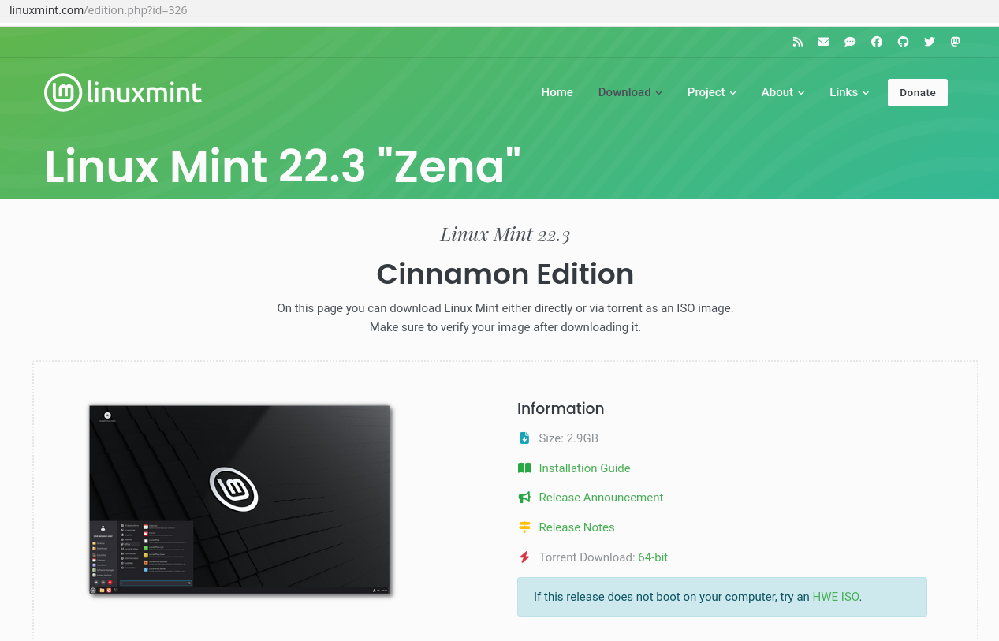
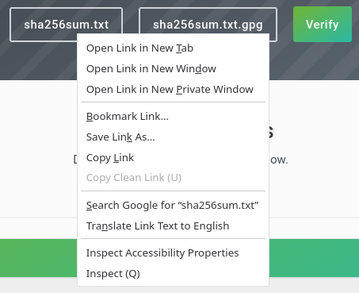
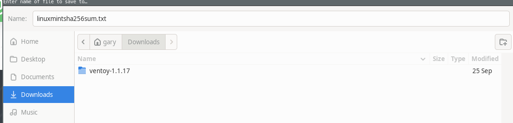
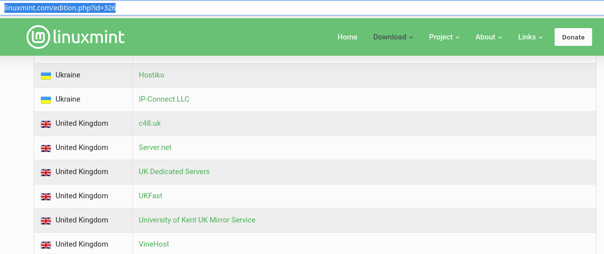
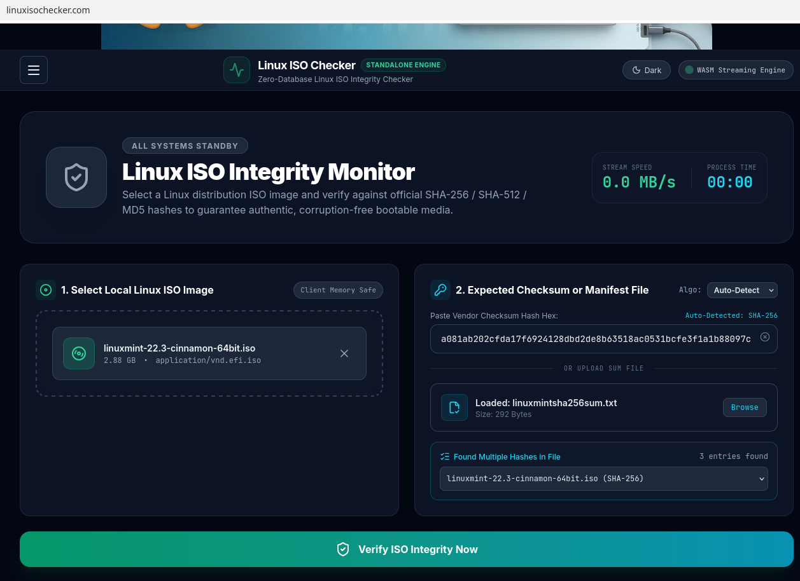
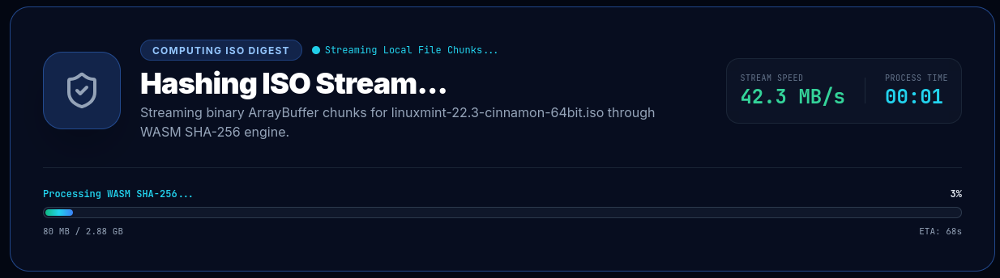
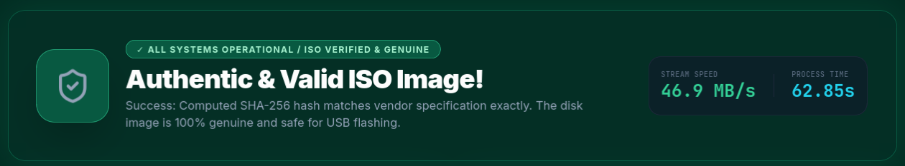

Download safety
How to verify a Linux Mint Download

Visit the official Linux Mint download page to obtain your ISO and its corresponding checksum file.

Right click on the Sha256sum.txt file and select "Save Link As..." to download it and save it as linuxmintsha256.txt.


Scroll down and click on a mirror link for the country you are in to download the ISO image.

Go to the Linux ISO Checker homepage.
Click "browse files" or drag the Linux Mint ISO image from your Downloads folder into the "Select Local Linux ISO Image" box.
Click "browse" next to "Upload Manifest File" and choose the "linuxmintsha256.txt" checksum file.
Click "Verify" to compare the calculated checksum with the expected value.

Depending on the file size, the verification process may take a minute or two to process.
When the process has completed, you will see the results of the verification.
